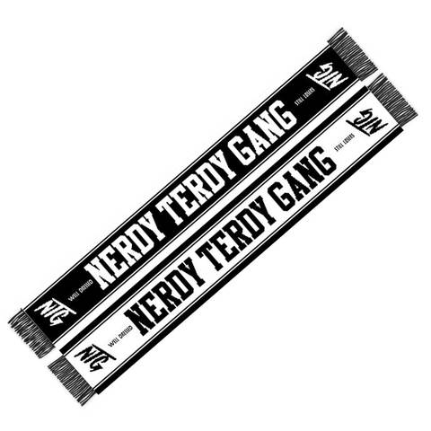
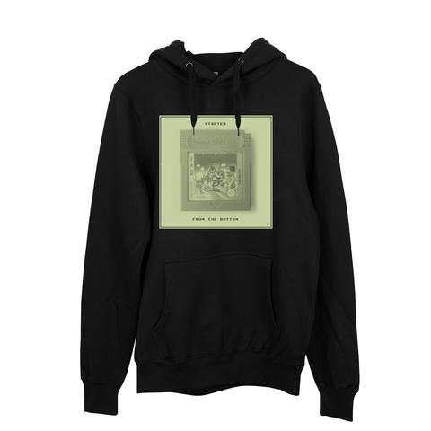

Yvon Chouinard, Patagonia's founder, got his start as a climber in 1953 as a 14-year-old member of the Southern California Falconry Club, which trained hawks and falcons for hunting. After one of the adult leaders, Don Prentice, taught the boys how to rappel down the cliffs to the falcon aeries, Yvon and his friends became so fond of the sport they started hopping freight trains to the west end of the San Fernando Valley, to the sandstone cliffs of Stoney Point. There, eventually, they learned to climb up as well as rappel down the rock.
Chouinard started hanging out at Stoney Point on every weekend in the winter, and at Tahquitz Rock above Palm Springs in the fall and spring. There he met some other young climbers who belonged to the Sierra Club, including TM Herbert, Royal Robbins, and Tom Frost. Eventually, the friends moved on from Tahquitz to Yosemite, to teach themselves to climb its big walls.
The only pitons available at that time were made of soft iron, placed once, then left in the rock. But in Yosemite, multiday ascents required hundreds of placements. Chouinard, after meeting John Salathé, a Swiss climber and Swedenborgian mystic who had once made hard-iron pitons out of Model A axles, decided to make his own reusable hardware. In 1957, he went to a junkyard and bought a used coal-fired forge, a 138-pound anvil, some tongs and hammers, and started teaching himself how to blacksmith.
Chouinard made his first pitons from an old harvester blade and tried them out with T.M. Herbert on early ascents of the Lost Arrow Chimney and the North Face of Sentinel Rock in Yosemite. The word spread and soon friends had to have Chouinard's chrome-molybdenum steel pitons. Before he knew it he was in business. He could forge two of his in an hour, and sold them for $1.50 each.
Chouinard built a small shop in his parents' backyard in Burbank. Most of his tools were portable, so he could load up his car and travel the California coast from Big Sur to San Diego, surfing. After a session, he would haul his anvil down to the beach and cut out angle pitons with a cold chisel and hammer before moving on.
For the next few years, Chouinard forged pitons during the winter months, spent April to July on the walls of Yosemite, then headed out of the heat of summer for the high mountains of Wyoming, Canada, or the Alps, and then back to Yosemite in the fall until the snow fell in November. He supported himself selling gear from the back of his car. The profits were slim, though. For weeks at a time, he'd live on fifty cents to a dollar a day. Before leaving for the Rockies one summer he bought two cases of dented, canned cat tuna from a damaged-can outlet in San Francisco. This food supply was supplemented by oatmeal, potatoes, and poached ground squirrel and porcupines.
In Yosemite, Chouinard and his friends were called the Valley Cong. They had to hide out from the rangers in the boulders above Camp 4 after they overstayed the 2-week camping limit. They took pride in the fact that climbing rocks and icefalls had no economic value, that they were rebels. Their heroes were Muir, Thoreau, Emerson, Gaston Rebuffat, Ricardo Cassin, and Herman Buhl.
Clothes for Climbers

During the late sixties, men did not wear bright, colorful clothes, not outside. "Active sportswear" consisted of basic gray sweatshirts and pants, and the standard issue for climbing in Yosemite was tan cut-off chinos and white dress shirts bought from the thrift store. On a winter climbing trip to Scotland in 1970, Chouinard bought a regulation team rugby shirt to wear rock climbing. Overbuilt to withstand the rigors of rugby, it had a collar that would keep the hardware slings from cutting into the neck. It was blue, with two red and one yellow center stripe across the chest. Back in the States, Chouinard wore it around his climbing friends, who asked where they could get one.
We ordered a few shirts from Umbro, in England, and they sold straight off. We couldn't keep them in stock, and soon began ordering shirts from New Zealand and Argentina as well. Other companies followed suit and we soon realized that we had introduced a minor fashion craze to the United States. We began to see clothing as a way to help support the marginally profitable hardware business, and by 1972 we were selling polyurethane rain cagoules and bivouac sacks from Scotland, boiled-wool gloves and mittens from Austria, and hand-knit reversible "schizo" hats from Boulder.
As we began to make more and more clothes, we needed to find a name for our clothing line. Why not "Chouinard?" We already had a good image going, why start from scratch? We had two reasons against it. First, we didn't want to dilute the image of Chouinard as a tool company by making clothing under that label. And second, we didn't want our clothes to be associated only with mountain climbing.
To most people, especially then, Patagonia was a name like Timbuktu or Shangri-La, far-off, interesting, not quite on the map. Patagonia brings to mind, as we once wrote in a catalog introduction, "romantic visions of glaciers tumbling into fjords, jagged windswept peaks, gauchos and condors." It's been a good name for us, and it can be pronounced in every language.
Beginnings and Blacksmithery
Patagonia was still a fairly small company when we started to devote time and money to the increasingly apparent environmental crisis. We all saw what was happening in the remote corners of the world: creeping pollution and deforestation, the slow, then not so slow, disappearance of fish and wildlife. And we saw what was happening closer to home: thousand year-old Sequoias succumbing to L.A. smog, the thinning of life in tide pools and kelp beds, the rampant development of the land along the coast.
What we began to read – about global warming, the cutting and burning of tropical forests, the rapid loss of groundwater and topsoil, acid rain, the ruin of rivers and creeks from silting-over dams – reinforced what we saw with our eyes and smelled with our noses during our travels. At the same time, we slowly became aware that uphill battles fought by small, dedicated groups of people to save patches of habitat could yield significant results.
The first lesson had come right here at home, in the early '70s. A group of us went to a city council meeting to help protect a local surf break. We knew vaguely that the Ventura River had once been a major steelhead salmon habitat. Then, during the forties, two dams were built, and water diverted. Except for winter rains, the only water left at the river mouth flowed from the sewage plant. At that city council meeting, several experts testified that the river was dead and that channeling the mouth would have no effect on remaining bird- and wildlife, or on our surf break.
Things looked grim until Mark Capelli, a 25-year-old biology student, gave a slide show of photos he had taken along the river – of the birds that lived in the willows, of the muskrats and water snakes, of eels that spawned in the estuary. He even showed a slide of a steelhead smolt: yes, fifty or so steelhead still came to spawn in our "dead" river.
The development plan was defeated. We gave Mark office space and a mailbox, and small contributions to help him fight the River's battle. As more development plans cropped up, the Friends of the Ventura River worked to defeat them, to clean up the water and to increase its flow. Wildlife increased and more steelhead began to spawn.
Mark taught us two important lessons: that a grassroots effort could make a difference, and that degraded habitat could, with effort, be restored. His work inspired us. We began to make regular donations, to stick to smaller groups working to save or restore habitat rather than give the money to NGOs with big staffs, overheads, and corporate connections. In 1986, we committed to donate 10% of profits each year to these groups. We later upped the ante to 1% of sales, or 10% of profits, whichever was greater. We have kept to that commitment every year since.
In 1988,

we initiated our first national environmental campaign on behalf of an alternative master plan to deurbanize the Yosemite Valley. Each year since, we have undertaken a major education campaign on an environmental issue. We took an early position against globalization of trade where it means compromise of environmental and labor standards. We have argued for dam removal where silting, marginally useful dams compromise fish life. We have supported wildlands projects that seek to preserve ecosystems whole and create corridors for wildlife to roam. We hold, every eighteen months, a "Tools for Activists" conference to teach marketing and publicity skills to some of the groups we work with.
We also, early on, began initial steps to reduce our own role as a corporate polluter: we have been using recycled-content paper for our catalogs since the mid-eighties. We worked with Malden Mills to develop recycled polyester for use in our Synchilla fleece.
Our distribution center in Reno, opened in 1996, achieved a 60% reduction in energy use through solar-tracking skylights and radiant heating; we used recycled content for everything from rebar to carpet to the partitions between urinals. We retrofitted lighting systems in existing stores, and build-outs for new stores became increasingly environmentally friendly. We assessed the dyes we used and eliminated colors from the line that required the use of toxic metals and sulfides. Most importantly, since the early nineties, we have made environmental responsibility a key element of everyone's job
Yvon Chouinard, Patagonia's founder, got his start as a climber in 1953 as a 14-year-old member of the Southern California Falconry Club, which trained hawks and falcons for hunting. After one of the adult leaders, Don Prentice, taught the boys how to rappel down the cliffs to the falcon aeries, Yvon and his friends became so fond of the sport they started hopping freight trains to the west end of the San Fernando Valley, to the sandstone cliffs of Stoney Point. There, eventually, they learned to climb up as well as rappel down the rock.
Chouinard started hanging out at Stoney Point on every weekend in the winter, and at Tahquitz Rock above Palm Springs in the fall and spring. There he met some other young climbers who belonged to the Sierra Club, including TM Herbert, Royal Robbins, and Tom Frost. Eventually, the friends moved on from Tahquitz to Yosemite, to teach themselves to climb its big walls.
The only pitons available at that time were made of soft iron, placed once, then left in the rock. But in Yosemite, multiday ascents required hundreds of placements. Chouinard, after meeting John Salathé, a Swiss climber and Swedenborgian mystic who had once made hard-iron pitons out of Model A axles, decided to make his own reusable hardware. In 1957, he went to a junkyard and bought a used coal-fired forge, a 138-pound anvil, some tongs and hammers, and started teaching himself how to blacksmith.
Chouinard made his first pitons from an old harvester blade and tried them out with T.M. Herbert on early ascents of the Lost Arrow Chimney and the North Face of Sentinel Rock in Yosemite. The word spread and soon friends had to have Chouinard's chrome-molybdenum steel pitons. Before he knew it he was in business. He could forge two of his in an hour, and sold them for $1.50 each.
Chouinard built a small shop in his parents' backyard in Burbank.
Most of his tools were portable, so he could load up his car and travel the California coast from Big Sur to San Diego, surfing. After a session, he would haul his anvil down to the beach and cut out angle pitons with a cold chisel and hammer before moving on.
For the next few years, Chouinard forged pitons during the winter months, spent April to July on the walls of Yosemite, then headed out of the heat of summer for the high mountains of Wyoming, Canada, or the Alps, and then back to Yosemite in the fall until the snow fell in November. He supported himself selling gear from the back of his car. The profits were slim, though. For weeks at a time, he'd live on fifty cents to a dollar a day. Before leaving for the Rockies one summer he bought two cases of dented, canned cat tuna from a damaged-can outlet in San Francisco. This food supply was supplemented by oatmeal, potatoes, and poached ground squirrel and porcupines.
In Yosemite, Chouinard and his friends were called the Valley Cong. They had to hide out from the rangers in the boulders above Camp 4 after they overstayed the 2-week camping limit. They took pride in the fact that climbing rocks and icefalls had no economic value, that they were rebels. Their heroes were Muir, Thoreau, Emerson, Gaston Rebuffat, Ricardo Cassin, and Herman Buhl.
Chouinard Equipment
There was soon enough demand for Chouinard's gear that he couldn't keep making it by hand; he had to start using tools and dies and machinery. So in 1965, he went into partnership with Tom Frost, who was an aeronautical engineer as well as a climber, and had a keen sense of design and esthetics. During the nine years that Frost and Chouinard were partners, they redesigned and improved almost every climbing tool, to make them stronger, lighter, simpler, and more functional. They would return from every trip to the mountains with new ideas for improving existing tools.
Their guiding design principle came from Antoine de Saint Exupéry, the French aviator

Let My People Surf
We were able, in many ways, to keep alive our cultural values, even during the heavy-growth years, and after the shock of the 1991 layoffs. We were surrounded by friends who could dress however they wanted, even barefooted. People ran or surfed at lunch, or played volleyball in the sandpit at the back of the building. The company sponsored ski and climbing trips; many more trips were undertaken informally by groups of friends who would drive up to the Sierras on Friday night and arrive home, groggy but happy, in time for work on Monday morning.
Since 1984 we have had no private offices, an architectural arrangement that sometimes creates distractions but also helps keep communication open. That year we opened a cafeteria where employees can gather throughout the day that to this day serves healthy, mostly vegetarian food. And we also opened, at Malinda Chouinard's insistence, an on-site child care center, at the time one of only 150 in the country (today there are more than 3,000). The presence of children playing in the yard, or having lunch with their parents in the cafeteria helps keep the company atmosphere more familial than corporate. We also continue to offer – mostly for the benefit of working parents but also for others – flexible working hours and job sharing.
We have never had to make a "break" from the traditional corporate culture that makes businesses hidebound and inhibits creativity. For the most part, we simply made the effort to hold to our own values and traditions.
Patagonia was still a fairly small company when we started to devote time and money to the increasingly apparent environmental crisis. We all saw what was happening in the remote corners of the world: creeping pollution and deforestation, the slow, then not so slow, disappearance of fish and wildlife. And we saw what was happening closer to home: thousand year-old Sequoias succumbing to L.A. smog, the thinning of life in tide pools and kelp beds, the rampant development of the land along the coast.
What we began to read – about global warming, the cutting and burning of tropical forests, the rapid loss of groundwater and topsoil, acid rain, the ruin of rivers and creeks from silting-over dams – reinforced what we saw with our eyes and smelled with our noses during our travels. At the same time, we slowly became aware that uphill battles fought by small, dedicated groups of people to save patches of habitat could yield significant results.
The first lesson had come right here at home, in the early '70s. A group of us went to a city council meeting to help protect a local surf break. We knew vaguely that the Ventura River had once been a major steelhead salmon habitat. Then, during the forties, two dams were built, and water diverted. Except for winter rains, the only water left at the river mouth flowed from the sewage plant. At that city council meeting, several experts testified that the river was dead and that channeling the mouth would have no effect on remaining bird- and wildlife, or on our surf break.
Things looked grim until Mark Capelli, a 25-year-old biology student, gave a slide show of photos he had taken along the river – of the birds that lived in the willows, of the muskrats and water snakes, of eels that spawned in the estuary. He even showed a slide of a steelhead smolt: yes, fifty or so steelhead still came to spawn in our "dead" river.
The development plan was defeated. We gave Mark office space and a mailbox, and small contributions to help him fight the River's battle. As more development plans cropped up, the Friends of the Ventura River worked to defeat them, to clean up the water and to increase its flow. Wildlife increased and more steelhead began to spawn.
Mark taught us two important lessons: that a grassroots effort could make a difference, and that degraded habitat could, with effort, be restored. His work inspired us. We began to make regular donations, to stick to smaller groups working to save or restore habitat rather than give the money to NGOs with big staffs, overheads, and corporate connections. In 1986, we committed to donate 10% of profits each year to these groups. We later upped the ante to 1% of sales, or 10% of profits, whichever was greater. We have kept to that commitment every year since.
In 1988, we initiated our first national environmental campaign on behalf of an alternative master plan to deurbanize the Yosemite Valley. Each year since, we have undertaken a major education campaign on an environmental issue. We took an early position against globalization of trade where it means compromise of environmental and labor standards. We have argued for dam removal where silting, marginally useful dams compromise fish life. We have supported wildlands projects that seek to preserve ecosystems whole and create corridors for wildlife to roam. We hold, every eighteen months, a "Tools for Activists" conference to teach marketing and publicity skills to some of the groups we work with.
We also, early on, began initial steps to reduce our own role as a corporate polluter: we have been using recycled-content paper for our catalogs since the mid-eighties. We worked with Malden Mills to develop recycled polyester for use in our Synchilla fleece.
Our distribution center in Reno, opened in 1996, achieved a 60% reduction in energy use through solar-tracking skylights and radiant heating; we used recycled content for everything from rebar to carpet to the partitions between urinals. We retrofitted lighting systems in existing stores, and build-outs for new stores became increasingly environmentally friendly. We assessed the dyes we used and eliminated colors from the line that required the use of toxic metals and sulfides. Most importantly, since the early nineties, we have made environmental responsibility a key element of everyone's job